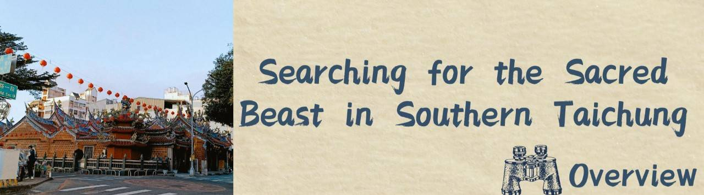

Overview
Nantun Old Street, also known as Plow Street, is the first pioneering area in Taichung City Taiwan. Because of the historic attractions, many tourists visited here. Located in the Old Street, the 300-year-old Wanhe Temple, is the oldest temple in the City,
Wanhe means harmony and peace. Because many immigrants of different clans had bloody conflicts when settling in the area. However, they found that the only way for them to live here safely was to cooperate with each other.
Thereby they set up the temple, and decorated the temple with Chinese sacred beasts symbolizing peace, many of which once appeared in the Hollywood movie " Shang-Chi and the Legend of the Ten Rings".
In the Hollywood movie " Shang-Chi and the Legend of the Ten Rings", there are many mythical beasts that appeared in "The Classic of Mountains and Seas", such as unicorns and phoenixes. They have actually appeared in the carvings in the Wanhe Temple. Therefore, we hope that through the website more people could visit here and see these sacred beasts.
In addition, Western religious buildings, such as the Notre Dame Cathedral in France, also have installations of sacred and mythical beasts. Our website aims to guide the visitors to compares the differences between Eastern and Western mythical beasts and their origins.

Nantun District, the southern part of Taichung City Taiwan, formerly known as "Plow Store", is now one of the earliest developed districts in Taichung City.
There were many blacksmith shops that manufactured agricultural tools in this area, where many historical stores aged over 100 years are located.
The " Wanhe Temple " which we visit is the religious center of this district.
We found many sacred beasts noted in “The Classic of Mountains and Seas” appearing in the super hero movie " Shang-Chi and the Legend of the Ten Rings ". Also, we discovered that these sacred beasts show up in the architectural sculpture of " Wanhe Temple " near our school.
Therefore, we plan to promote the ancient local temple to the public via the interesting connection. Hopefully, after visiting our website, more people can frequent our neighboring temple and see these sacred beasts sculptures.

t's hard to start a whole new project covering so much information, but we finally get to the right track after consulting our instructors. Since it’s so interesting a topic, we conquered many obstacles step by step.

Through producing the website and physically visiting " Wanhe Temple ," we learn much knowledge and many information skills which we cannot acquire at school. We also better our ability in time management and collaborating with each other. All and all, to participate in the project is really a meaningful and rewarding experience.